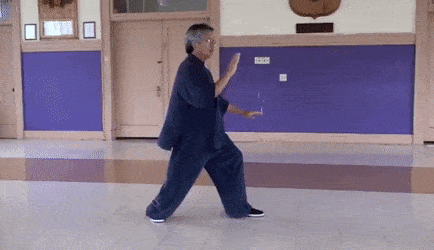

Tai chi (Chinese: 太極; pinyin: Tàijí), short for T'ai chi ch'üan or Tàijí quán (太極拳), is an internal Chinese martial art practiced for both its defense training, its health benefits and meditation. The term taiji is a Chinese cosmological concept that refers to the flux of yin and yang, and 'quan' means fist. So, etymologically, Taijiquan is a fist system based on the dynamic relationship between polarities (Yin and Yang). Though originally conceived as a martial art, it is also typically practiced for a variety of other personal reasons: competitive wrestling in the format of pushing hands (tui shou), demonstration competitions and achieving greater longevity. As a result, a multitude of training forms exist, both traditional and modern, which correspond to those aims with differing emphasis. Some training forms of tai chi are especially known for being practiced with relatively slow movements.
Main article: Qigong Qigong involves coordinated movement, breath, and awareness used for health, meditation, and martial arts training. While many scholars and practitioners consider tai chi to be a type of qigong,[24][25] the two are commonly distinguished as separate but closely related practices, with qigong playing an important role in training for tai chi, and with many tai chi movements performed as part of qigong practice. The focus of qigong is typically more on health or meditation than martial applications. Internally the main difference is the flow of qi. In qigong, the flow of qi is held at a gate point for a moment to aid the opening and cleansing of the channels.[clarification needed] In tai chi, the flow of qi is continuous, thus allowing the development of power for the use by the practitioner.
Return Home